第 1 章 操作系统概论
并发 / 共享 / 虚拟 / 异步四大特性，分时与多道架构。
来源:
index.md（167 张幻灯片）+ 1 张保留图（CPU 利用率曲线）+ 4 张 mermaid 化结构图 配图说明: 装饰漫画/重复结构图已删除；关键关系图（四特性、微内核分层、SMP、分时主机-终端）转 mermaid 直接渲染；CPU 利用率曲线（数值密集）保留为 jpg 阅读对象: 华中科技大学电信本科生，零基础学 OS，目标过期末 + 求职面试 写作风格: 先日常类比 → 再技术定义 → 关键考点用 ** 突出
1.1 什么是操作系统
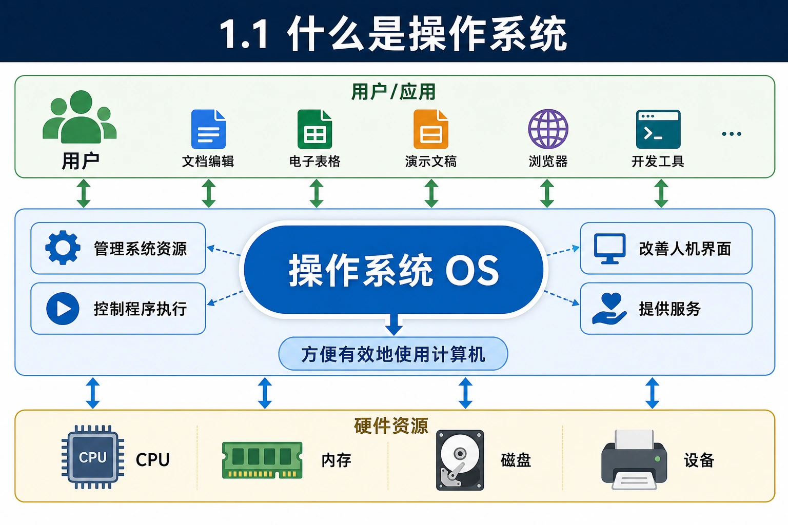
一句话定义
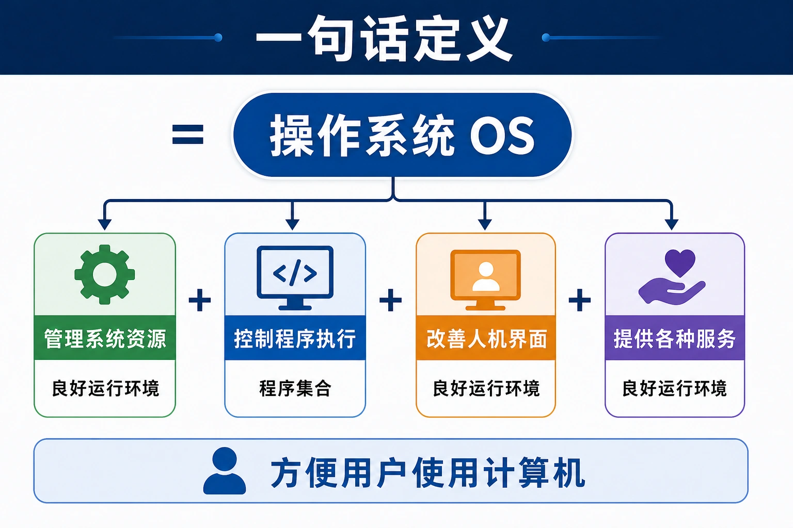
操作系统 (Operating System, OS) 是管理系统资源、控制程序执行、改善人机界面、提供各种服务，并为用户方便有效地使用计算机提供良好运行环境的一种系统软件。
教材里另一种更短的说法：用以控制和管理系统资源、方便用户使用计算机的程序集合。
日常类比
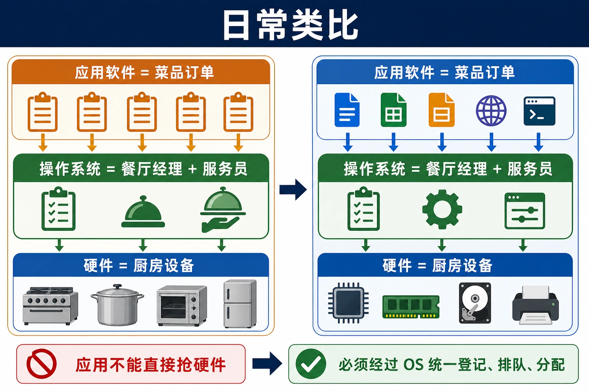
把一台计算机想象成一座大型餐厅： - 硬件 = 厨房的灶台、冰箱、刀具（物理设备，本身不会自己工作） - 应用软件 = 各种菜品订单（QQ、微信、Chrome、游戏，都是”想完成的事”） - 操作系统 = 餐厅经理 + 服务员
订单不会直接冲进后厨抢锅；它通过经理（OS）登记、排队、分配灶台。用户和应用从不直接碰硬件，必须经过 OS 这个中介。
OS 在计算机系统中的位置（重要分层图）
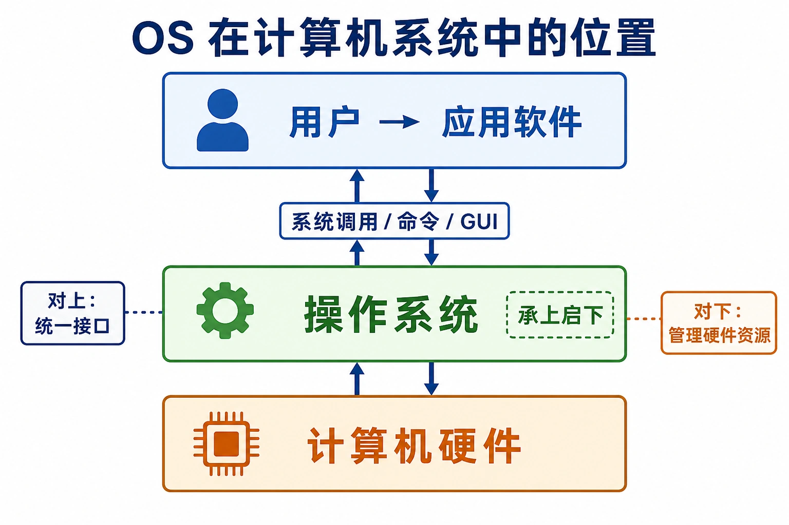
用户
↓
应用软件 （Chrome / 微信 / Word ...）
↓
操作系统 ← 三类接口对上：系统调用 / 命令 / GUI
↓
计算机硬件 （CPU / 内存 / 键盘 / 鼠标 / 磁盘）
OS 是承上启下的双向桥梁：
- 对上 给应用提供统一接口，让应用不用关心硬件细节（比如不管你是固态盘还是机械盘，应用统一调 write()）
- 对下 统一管硬件资源，让多个应用能”和平共享”同一套硬件而不打架
OS 的四种观察视角（考点：背熟这四个观点）
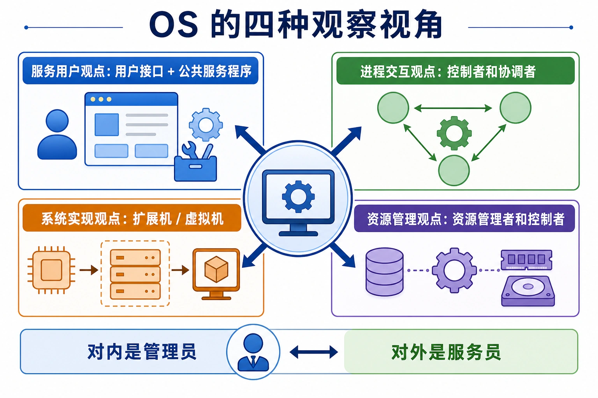
教材给出四个观察视角，考试常出”OS 的作用 / 角色”简答题：
| 观点 | 角色 | 强调什么 |
|---|---|---|
| 服务用户观点 | 用户接口 + 公共服务程序 | 提供友善人机接口 |
| 进程交互观点 | 进程执行的控制者和协调者 | 管并发、互斥、通信、死锁 |
| 系统实现观点 | 扩展机 / 虚拟机 | 把裸机改造成更好用的机器 |
| 资源管理观点 | 资源管理者和控制者 | 分配/回收/调度软硬件资源 |
也可以记成两个角色：对内是”管理员”（管资源、调度进程），对外是”服务员”（给用户和应用提供接口）。
1.2 OS 的功能与特性
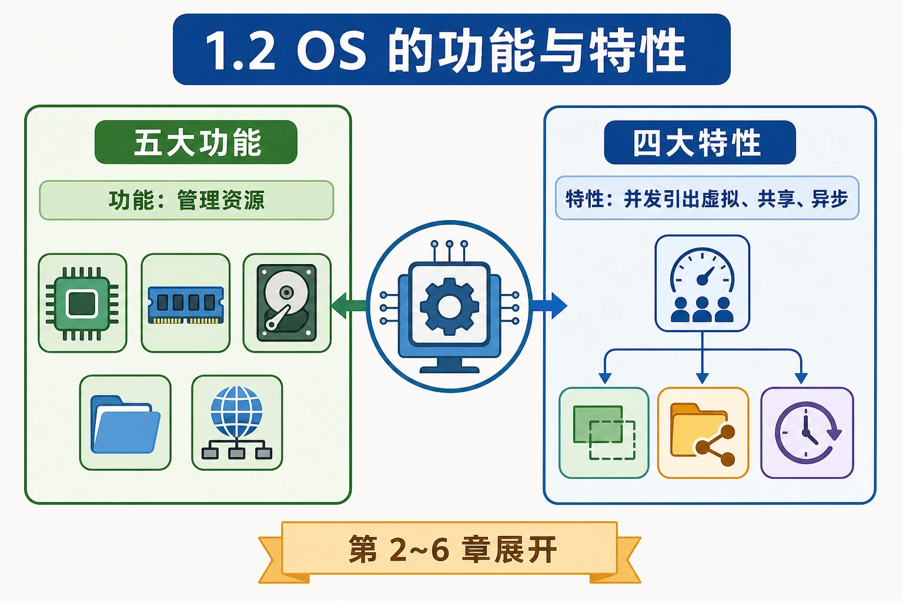
五大功能（考点）
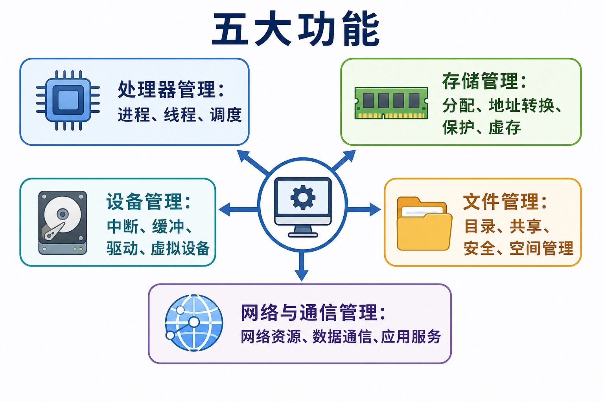
| 功能 | 主要内容 |
|---|---|
| 处理器管理 | 进程控制/同步/互斥/通信/死锁、线程管理、调度（高/中/低三级） |
| 存储管理 | 内存分配、地址转换、存储保护、内存共享、存储扩充（虚存） |
| 设备管理 | 中断处理、缓冲区管理、设备独立性、分配回收、设备驱动调度、虚拟设备 |
| 文件管理 | 文件的逻辑/物理组织、存取方法、目录管理、共享和安全、存储空间管理 |
| 网络与通信管理 | 网络资源管理、数据通信、应用服务、网络管理 |
第 2~6 章会一一展开。
四大特性（考点 + 关系图）
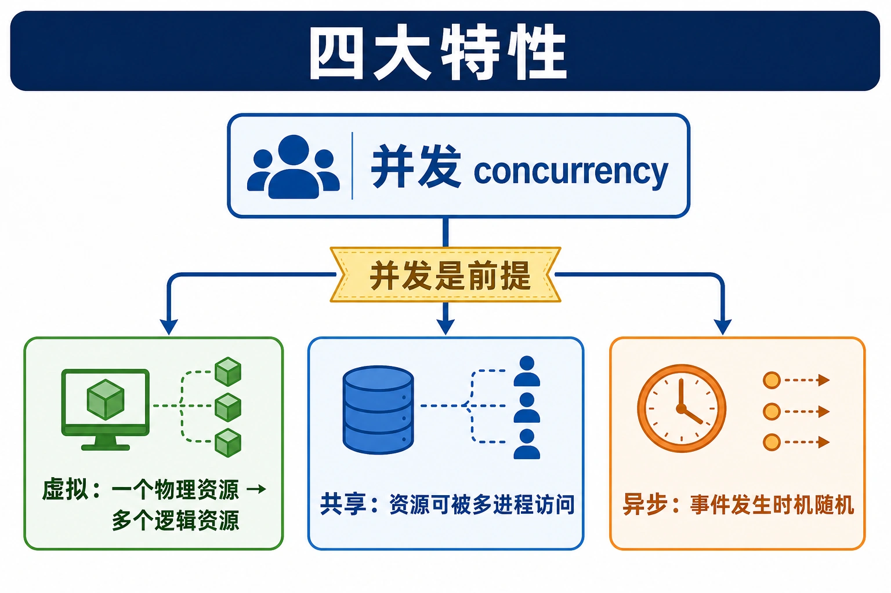
幻灯片 51 用一张图说明四特性的因果关系：并发是前提，由它派生出虚拟、共享、异步三性。
flowchart LR
C[并发
concurrency]
V[虚拟
一个物理资源 → 多个逻辑资源]
S[共享
资源可被多进程访问]
A[异步
事件发生时机随机]
C -->|前提| V
C -->|前提| S
C -->|前提| A
逐个看：
1. 并发性 (concurrency) — 两个或两个以上事件在同一时间间隔内发生
- 类比：你左手写作业、右手吃饭、嘴里聊天，三件事在”这 5 分钟内”都在推进——这就是并发
- 并发 ≠ 并行：并行 (parallelism) 要求同一时刻真的同时发生（必须有多个物理 CPU）；并发只要求时间间隔重叠，单 CPU 通过时间片切换也能做到
- 关系：并行是并发的特例，并发是并行的扩展。”并行的一定并发，并发的不一定并行”
2. 共享性 (sharing) — 系统资源被多个并发进程使用
- 两种共享方式：
- 透明共享 (资源隔离 + 授权访问) — 如内存：每个进程感觉独占，互不干扰
- 显式共享 (临界资源 + 独占访问) — 如打印机：同一时刻只能一个进程用
- 衍生问题：分配策略、信息保护、存取控制（第 3、4、5 章细讲）
3. 虚拟性 (virtual) — 一个物理实体映射成若干逻辑实体（分时或分空间）
- CPU → 每个进程的”虚处理器”（感觉自己独占 CPU）
- 内存 → “虚拟存储器”（每个进程独占自己的地址空间）
- 屏幕 → 多窗口 / 虚拟终端
4. 异步性 (asynchrony) — 事件发生时机具有随机性
- 进程何时执行、何时暂停、推进速度多快——都是随机的
- 中断、异常、用户按键、I/O 完成，时机都不可预测
- OS 的核心任务：捕捉任何随机事件，正确处理任何事件序列，否则产生”与时间有关的错误”（time-related bug，难调试）
1.3 资源管理三大技术：复用 / 虚拟 / 抽象
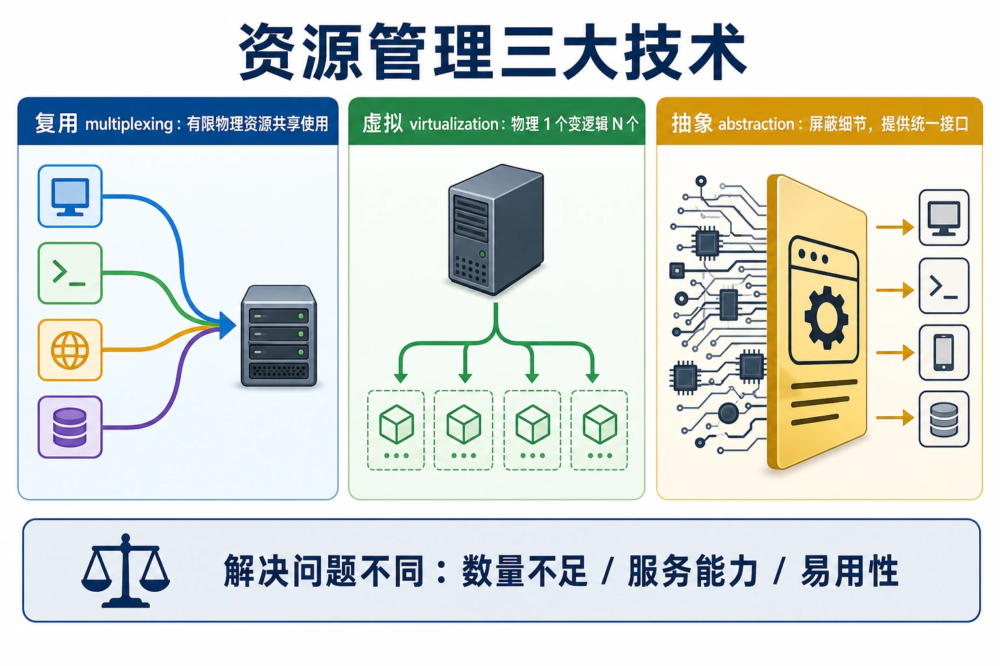
这是 1.1 节的精髓，几乎每年考。三种技术解决的问题不同：
| 技术 | 解决什么问题 | 一句话理解 |
|---|---|---|
| 复用 (multiplexing) | 物理资源数量不足 | 让有限的资源被多个进程共享使用 |
| 虚拟 (virtualization) | 数量不足 + 提高服务能力 | “无中生有”——物理 1 个变逻辑 N 个 |
| 抽象 (abstraction) | 系统复杂、易用性差 | 屏蔽细节，提供简单统一的接口 |
(1) 复用：分割共享一个物理资源
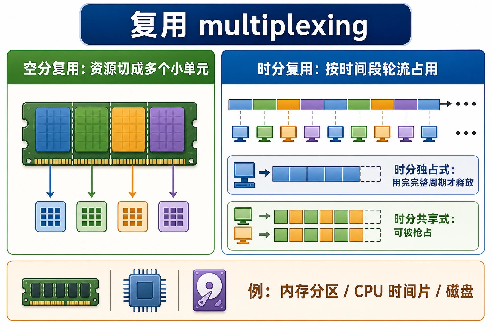
两种子方式：
- 空分复用 — 把资源切成多个小单元，每个进程拿一块。例：内存被切成多个分区，A 进程占 100~200MB，B 占 200~400MB
- 时分复用 — 资源整体作为分配单元，按时间段轮流占用：
- 时分独占式：进程拿到后用完一个完整周期才释放（如磁带——你要从头读到尾）
- 时分共享式：进程随时可能被剥夺（如 CPU、磁盘——典型的抢占式）
类比：教室是空分复用（每个人占一张桌子）；公共篮球场是时分复用（你打半小时下场让别人）。
(2) 虚拟：创造”虚假但好用”的资源
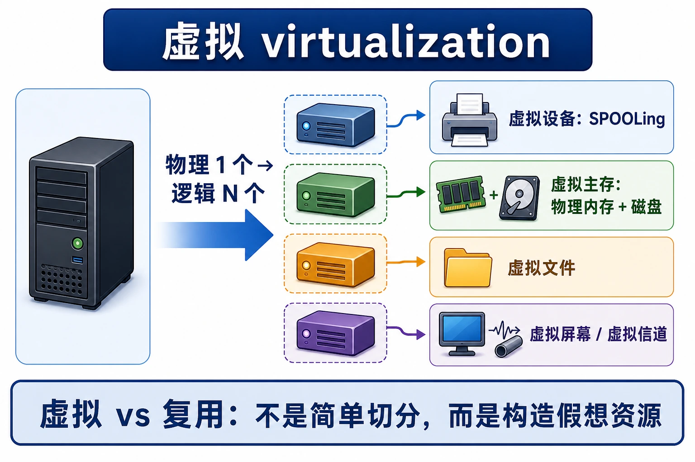
通过转化、模拟、整合，把物理上的 1 个资源变成逻辑上的 N 个（或反过来）。
虚拟 vs 复用 的区别：复用是切分已存在的物理资源；虚拟是虚构假想的同类资源。
经典例子： - 虚拟设备 (SPOOLing 假脱机) - 虚拟主存 (你写程序感觉有 4GB 内存，实际可能只有 2GB 物理内存 + 用磁盘当替补) - 虚拟文件 - 虚拟屏幕 (终端复用 / 多窗口) - 虚拟信道
(3) 抽象：屏蔽硬件细节，提供易用接口
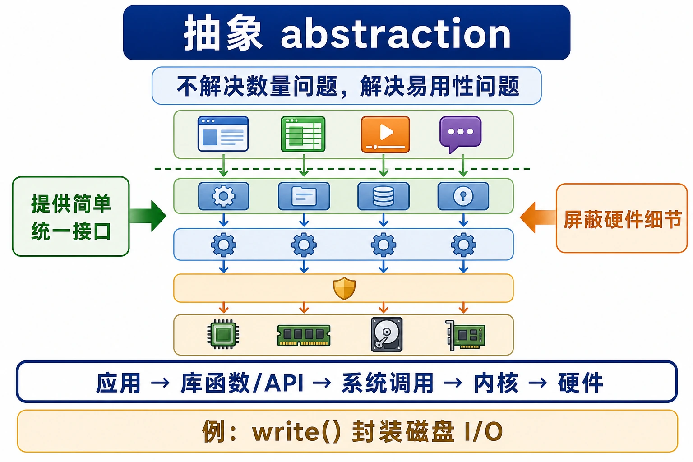
抽象不解决”数量”问题，解决”易用性”问题。 通过软件包装硬件，让用户/程序员不需要懂硬件就能用。
类比：你按手机相机 App 的拍照按钮，背后涉及 CMOS 传感器、ISP 处理、文件存储——但你只看到一个”咔嚓”按钮。这就是抽象。
单级抽象例子：把磁盘 I/O 包装成一个 write() 系统调用：
void write(char *block, int length, int device, int track, int sector) {
load(block, length, device); // 装载数据
seek(device, track); // 定位磁道
out(device, sector); // 输出到扇区
}
调用者不再关心磁道、扇区，只要给数据、长度、设备号。
多级抽象例子：fprintf() 调用 write()，再往下一层调底层 I/O——一层层往上，每层都更易用：
int fprintf(fileID, "%s", datum) {
...
write(...); // 内部还是依赖底层 write
...
}
(4) 三技术的组合使用
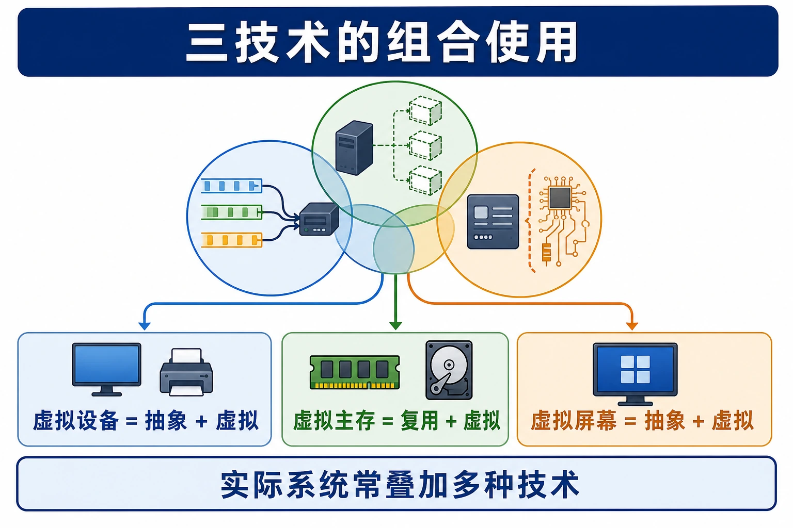
实际系统对一类资源往往多种技术叠加：
| 资源 | 用了哪些技术 |
|---|---|
| 虚拟设备 | 抽象 + 虚拟 |
| 虚拟主存 | 复用 + 虚拟 |
| 虚拟屏幕 | 抽象 + 虚拟 |
OS 三大基础抽象（考点）
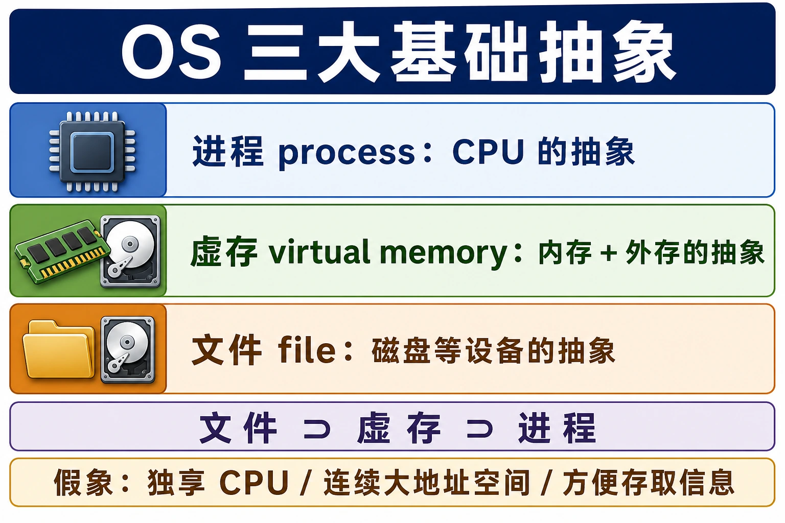
OS 提供三个最核心的抽象，分别对应三种硬件资源：
| 抽象 | 对应硬件 | 给用户的”假象” |
|---|---|---|
| 进程 (process) | 处理器 (CPU) | 每个进程感觉自己独享一颗 CPU |
| 虚存 (virtual memory) | 内存 + 外存 | 每个进程感觉自己独占一段连续的大地址空间，不受物理内存限制 |
| 文件 (file) | 磁盘等设备 | 用户感觉信息总能方便地存取，不用关心字节落在哪个物理块 |
包含关系（重要，幻灯片 40）：从外向内逐层封装
文件抽象 ⊃ 虚存抽象 ⊃ 进程抽象
(设备) (内存) (CPU)
文件依赖虚存（要把数据加载到地址空间），虚存依赖进程（要在某个执行上下文里访问）。
OS 虚拟机概念
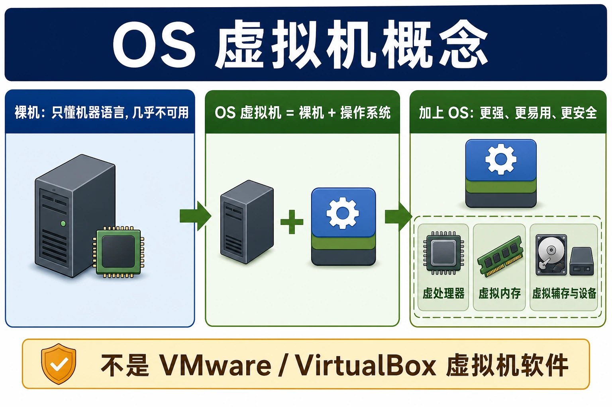
OS 虚拟机 = 裸机 + 操作系统
裸机只懂机器语言，几乎不可用。加上 OS 后，程序员看到一台”功能更强、更易用、更安全”的机器，包含：
- 虚处理器
- 虚拟内存
- 虚拟辅存（磁盘抽象）
- 虚拟设备
注意：这里说的”OS 虚拟机”是抽象层级上的虚拟机（OS 提供给应用的”放大版机器”），跟”VMware/VirtualBox 那种虚拟机软件”不是一回事——后者是 1.5 节会讲的”虚拟机结构 OS”。
1.4 OS 接口：用户怎么和 OS 打交道
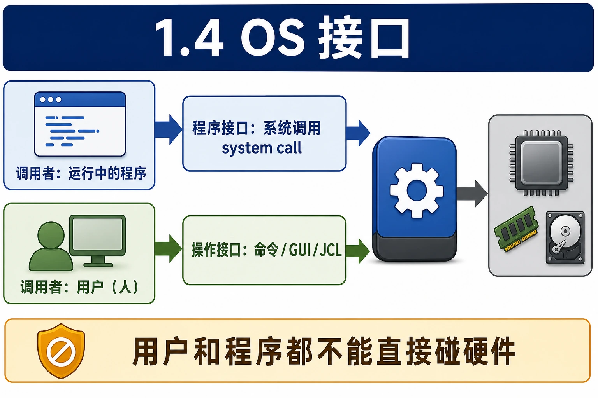
OS 提供两类接口：
| 接口 | 调用者 | 实现形式 |
|---|---|---|
| 程序接口 | 运行中的程序 | 系统调用 (system call) 集合 |
| 操作接口 | 用户（人） | 操作命令、GUI、作业控制语言 (JCL) |
1.4.1 程序接口与系统调用
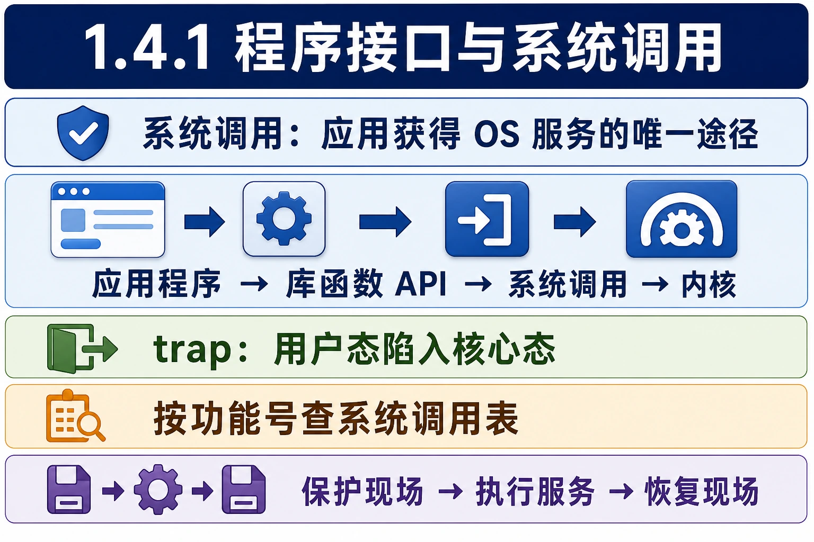
核心定义：内核提供一系列实现预定功能的内核函数，通过一组叫系统调用的接口暴露给用户程序。
关键性质：系统调用是应用程序获得 OS 服务的唯一途径。
类比：去政府办事大厅，你不能自己跑进档案库翻文件（直接碰硬件），必须通过窗口（系统调用）让工作人员（内核）替你办——这样既保证安全（内核检查权限），又屏蔽细节（你不用懂内部流程）。
系统调用的作用： 1. 内核基于权限和规则裁决资源访问 → 安全性 2. 封装资源抽象、提供一致接口 → 编程方便、避免错误
系统调用 vs 函数调用（考点）：
| 维度 | 函数调用 | 系统调用 |
|---|---|---|
| 调用形式 | 跳转语句含目标地址 | 仅给”功能号”，按号查表 |
| 代码位置 | 调用者和被调用者在同一程序 | 处理代码在 OS 中（用户程序之外） |
| 提供方 | 编译系统提供，可变 | OS 提供，固定不变 |
| 是否进核态 | 否 | 是（要从用户态陷入核心态） |
系统调用处理流程（流程图记忆）：
用户程序
↓ 陷入指令 (trap)
[系统调用陷入机构]
↓ 保护 CPU 现场
↓ 取系统功能号
↓ 查入口地址表 → 找到对应处理子程序
[系统调用处理子程序]
↓ 完成具体功能
↓ 恢复现场
↓ 返回用户程序
参数传递三种方式： 1. 直接参数：访管/陷入指令自带参数 2. 寄存器传递：CPU 通用寄存器存参数 3. 专用堆栈区域：在主存开辟堆栈传参
API、库函数、系统调用的关系：
- 应用程序很少直接用系统调用（太底层、复杂、跨平台困难）
- 通常用库函数（如 C 标准库 printf），库函数内部再调系统调用
- POSIX 标准 规定了系统调用接口，让应用可移植
调用链：应用 → 库函数 (API) → 系统调用 → 内核
系统调用分类（6 类）：进程/作业管理、文件操作、设备管理、主存管理、信息维护、进程通信。
1.4.2 操作接口与系统程序
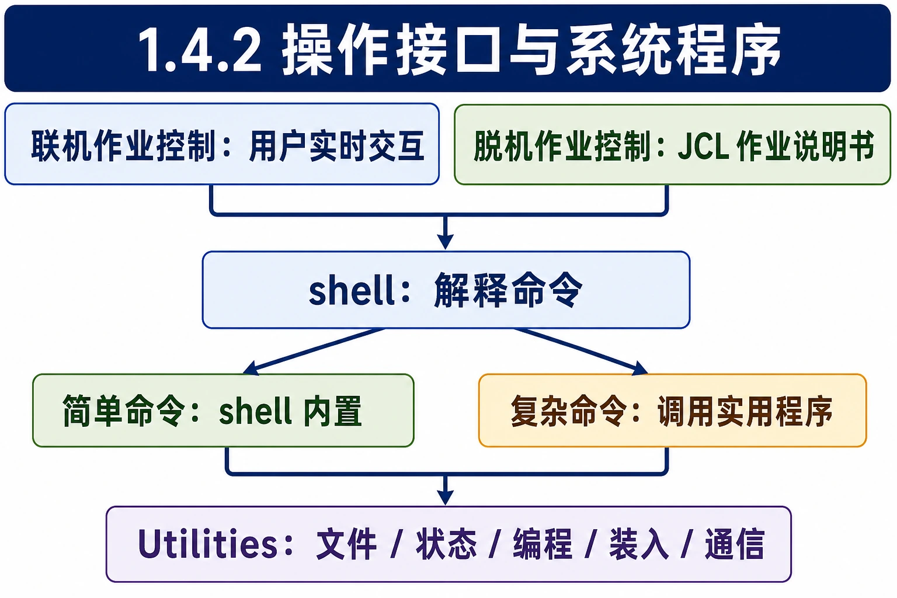
作业控制方式两种：
| 方式 | 谁来控制 | 实现 |
|---|---|---|
| 联机作业控制 | 用户实时交互 | 操作控制命令（命令行/批命令/图形化） |
| 脱机作业控制 | 提前写好作业说明书 | 作业控制语言 JCL (Job Control Language) |
JCL 时代典型例子（IBM 370）——一段作业说明书像这样：
// HAROLD JOB,WILSON,MSGLEVEL=(2,0),PRTY=6,CLASS=B
// COMP EXEC PGM=IEYFORT ← 用 Fortran 编译器
// SYSPRINT DD SYSOUT=A
// SYSIN DD*
<SOURCE PROGRAM CARDS> ← 源代码
/*
// GO EXEC PGM=FORTLINK ← 链接
...
整本”作业说明书 + 源代码 + 数据”打包提交，系统自动跑完。这是早期批处理的工作方式——后面 1.6 节会讲为什么需要这个。
命令解释程序 (shell)：
- 简单命令：shell 自带处理代码（如 cd、echo）
- 复杂命令：调用独立的”实用程序”文件（如 ls、grep）
- Linux shell 就是典型例子
系统程序 / 实用程序 (Utilities)：不属于内核，但必不可少。分类： - 文件管理（cp、rm、ls） - 状态信息（ps、top） - 程序设计语言支持（gcc、make） - 程序装入和执行支持（ld、strip） - 通信（ssh、wget） - 其它工具
1.5 OS 结构：单内核 vs 微内核
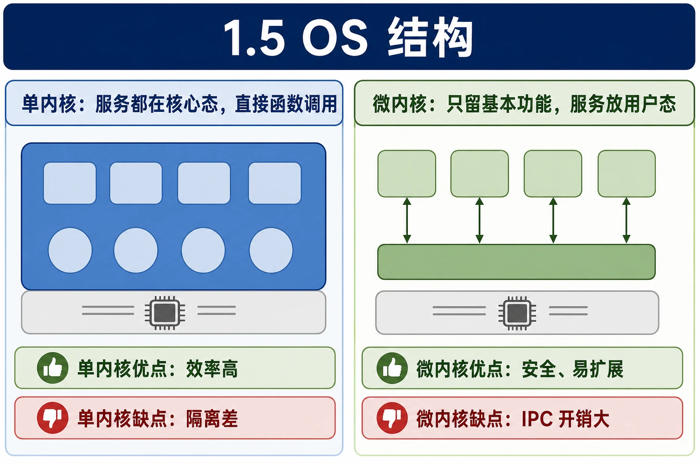
1.5.1 四种 OS 结构
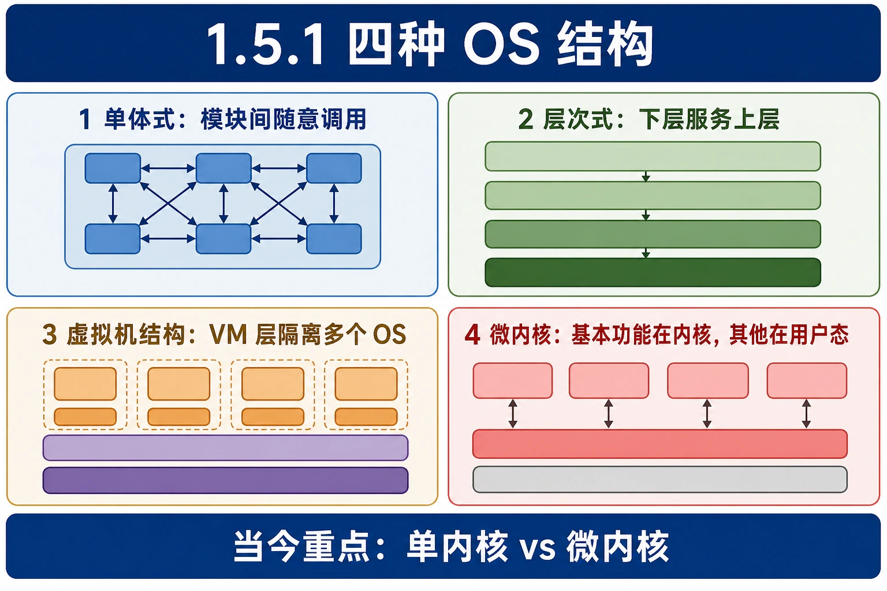
教材列出 4 种结构，但只有单内核和微内核是当今主流，前两种主要是历史：
| 结构 | 特点 | 典型代表 |
|---|---|---|
| 1. 单体（整体）式 | 早期 OS，模块间随意调用 | 早期 DOS |
| 2. 层次式 | 严格分层，下层服务上层 | THE 系统 |
| 3. 虚拟机结构 | 在硬件上加 VM 层，每个 VM 跑独立 OS | IBM CP/CMS, VMware |
| 4. 微内核 | 内核只留最基本功能，其他放用户态 | Mach, QNX, HarmonyOS |
1.5.2 内核 (kernel) 概念
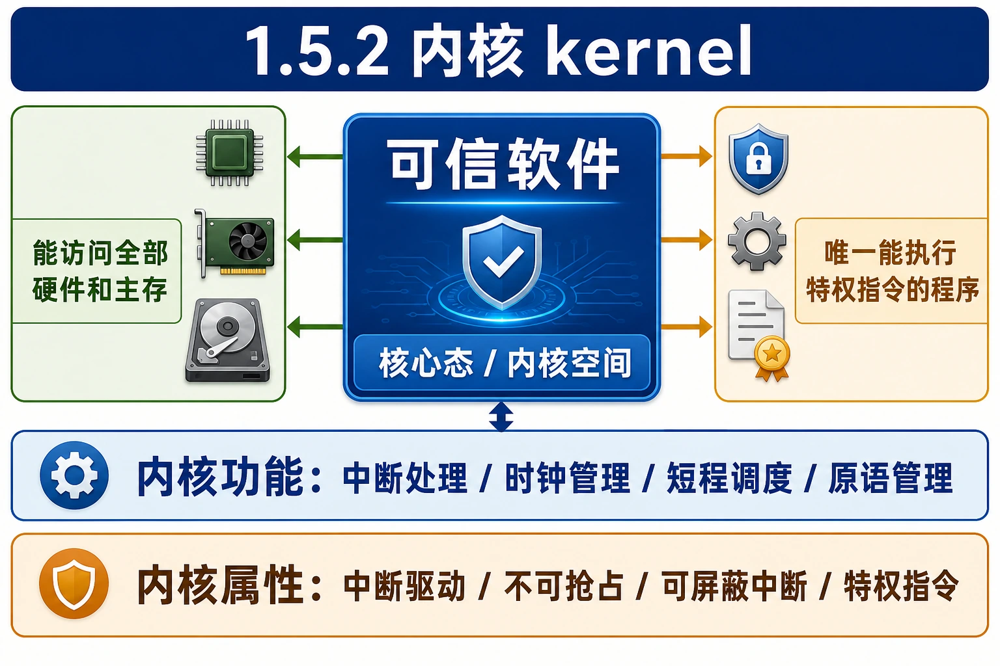
定义：内核是作为可信软件，提供进程并发执行的基本功能和基本操作的一组程序模块。
性质： - 驻留内核空间，运行于核心态（特权模式） - 能访问全部硬件和主存 - 唯一能执行特权指令的程序
内核功能（4 项，考点）： 1. 中断处理 2. 时钟管理 3. 短程调度（短程 = 进程级调度） 4. 原语管理（不可中断的操作）
内核属性（4 条）： - 由中断驱动 - 不可抢占（执行时不会被其他进程打断，但可被中断打断） - 可在屏蔽中断状态下执行 - 可使用特权指令
内核分两类：单内核（宏内核） vs 微内核——这是重点。
1.5.3 单内核（宏内核, Monolithic Kernel）
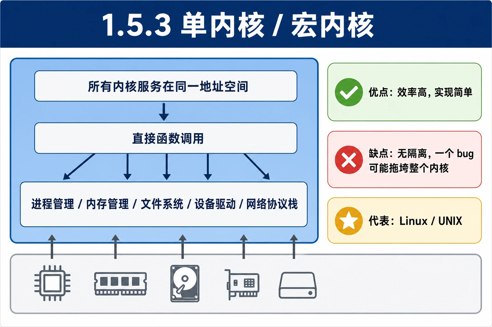
把内核整体作为一个大进程，所有内核服务运行在同一个地址空间，互相直接调用函数。
代表：Linux、传统 UNIX。
涵盖范围广：进程管理、内存管理、文件系统、设备驱动、网络协议栈——全部塞进内核。
| 优点 | 缺点 |
|---|---|
| 模块间直接调函数，效率高 | 模块间无隔离，一个 bug 可能拖垮整个内核 |
| 实现简单 | 稳定性差、可维护性差 |
类比：一家什么都自己做的小餐馆，老板兼厨师兼服务员，效率高但一个人病了店就关了。
1.5.4 微内核 (Microkernel)
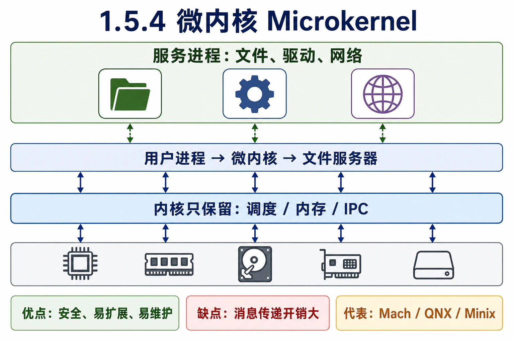
内核只保留最基本功能：进程调度、内存管理、IPC（进程间通信）。
文件系统、设备驱动、网络协议栈——全部移到用户态，作为”服务进程”运行。进程间通过消息传递 (IPC) 通信。
代表：Windows NT、Mac OS X (Darwin/Mach)、HarmonyOS、Minix、QNX。
结构图（基于幻灯片 88 内嵌图）：
flowchart TB
subgraph user["用户态"]
U1[用户进程1]
U2[用户进程2]
FS[文件服务器]
PS[进程服务器]
MS[主存服务器]
DOTS[...]
end
subgraph kernel["核心态"]
MK[微内核 · 消息传递]
end
HW[计算机硬件]
user -.IPC.-> MK
MK --> HW
U1 -- 发消息 --> MK
MK -- 转发 --> FS
调用流程：用户进程要读文件 → 通过微内核发消息给”文件服务器” → 文件服务器处理 → 经微内核回消息。
| 优点 | 缺点 |
|---|---|
| 模块化高，一个服务挂了不影响其他 | 大量消息传递，性能开销大 |
| 安全性高、易扩展、易维护 | 实现复杂 |
类比：一家分工明确的连锁餐厅，前台只做接待（微内核），厨房、库房、清洁各自独立（用户态服务进程）；某天清洁出问题，餐厅照常开业。但每件事要经多次电话传递，效率不如夫妻店。
1.5.5 OS 运行模型
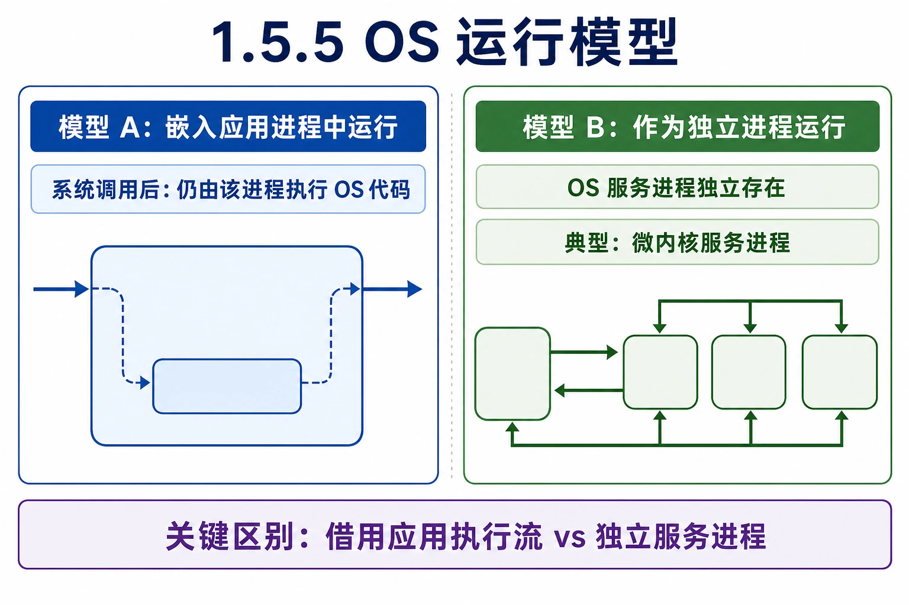
OS 程序怎么在 CPU 上跑？两种模型：
| 模型 | 描述 |
|---|---|
| 嵌入应用进程中运行 | OS 代码”借”应用进程的执行流（系统调用进核态后，仍是这个进程在跑 OS 代码） |
| 作为独立进程运行 | OS 服务作为单独进程存在（典型微内核做法） |
1.6 OS 发展历史
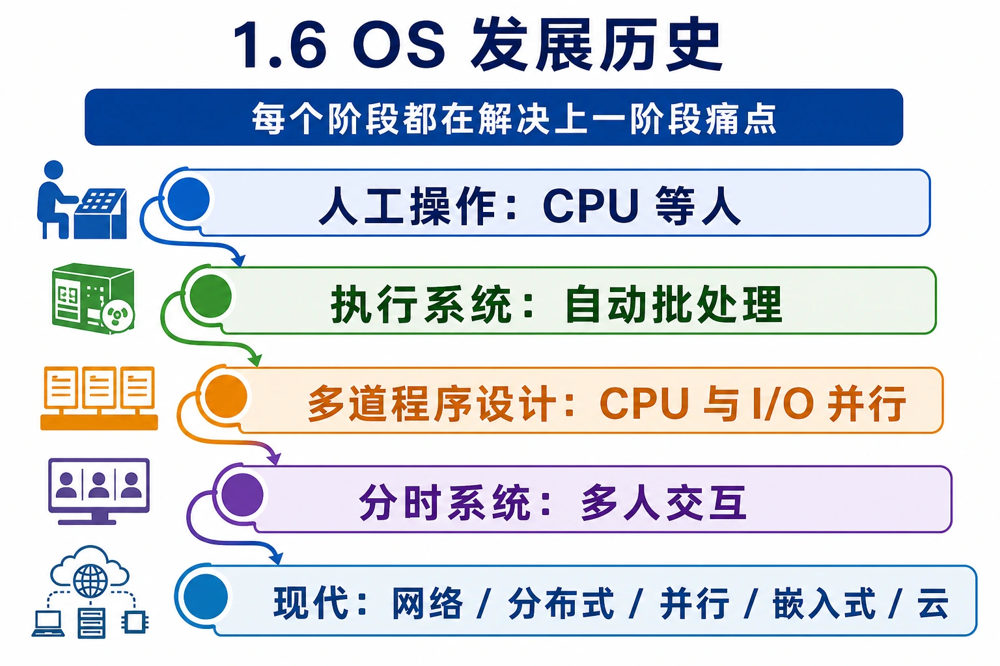
时间线
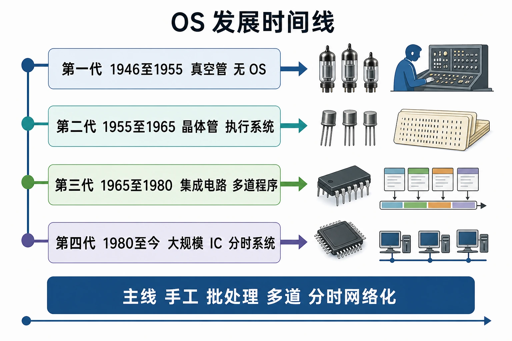
| 时代 | 年代 | 硬件 | 工作方式 |
|---|---|---|---|
| 第一代 | 1946-1955 | 真空管 | 无 OS（手工操作） |
| 第二代 | 1955-1965 | 晶体管 | 执行系统（早期单道批处理） |
| 第三代 | 1965-1980 | 集成电路 | 多道程序设计 |
| 第四代 | 1980-至今 | 大规模 IC | 分时系统，并行/分布/网络/智能化 |
每个阶段诞生的关键技术，都为了解决上一阶段的痛点。
1.6.1 人工操作阶段（电子管，1946~50s）
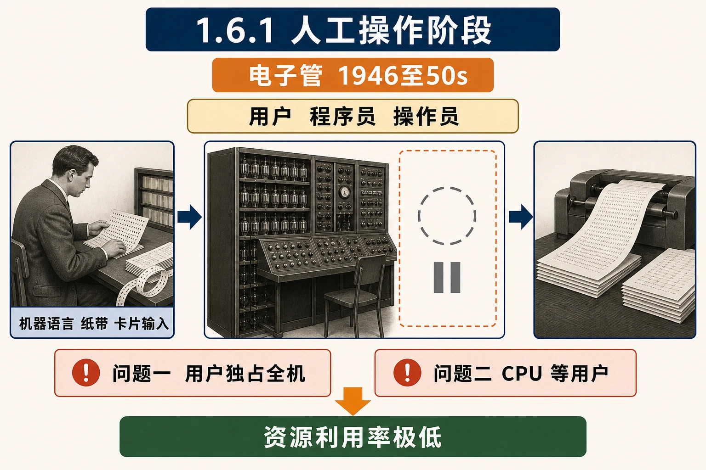
工作方式：用户既是程序员又是操作员；用机器语言；通过纸带/卡片输入。
两个致命问题： - 用户独占全机 → 资源利用率极低 - CPU 等用户（计算前后都要人工装卸纸带） → CPU 大量闲置
幻灯片 107 的卡通画就是这个时代的写照：人坐在机器前，手工准备纸带、装入、取出。
1.6.2 执行系统阶段（晶体管，50s 末~60s 中）
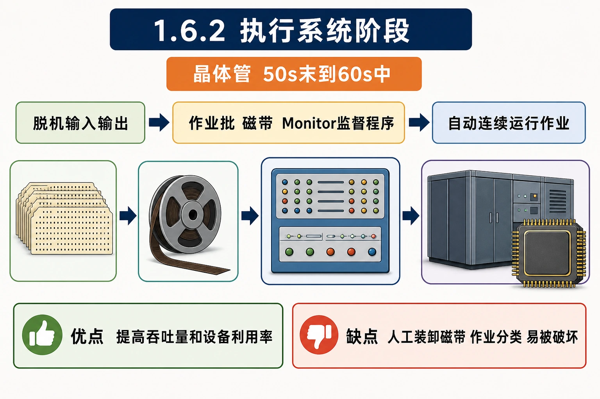
关键技术：脱机输入输出
把作业用磁带打包成”作业批”，由监督程序 (Monitor) 自动一个个跑，省去人工干预。
优点：自动化批处理 → 改善 CPU 和 I/O 设备利用率，提高吞吐量。
缺点： - 磁带还是要人工装卸 - 作业还得人工分类 - 监督程序容易被用户程序破坏（那时还没有内存保护）
1.6.3 多道程序设计与 OS 形成（集成电路，60s 中后）
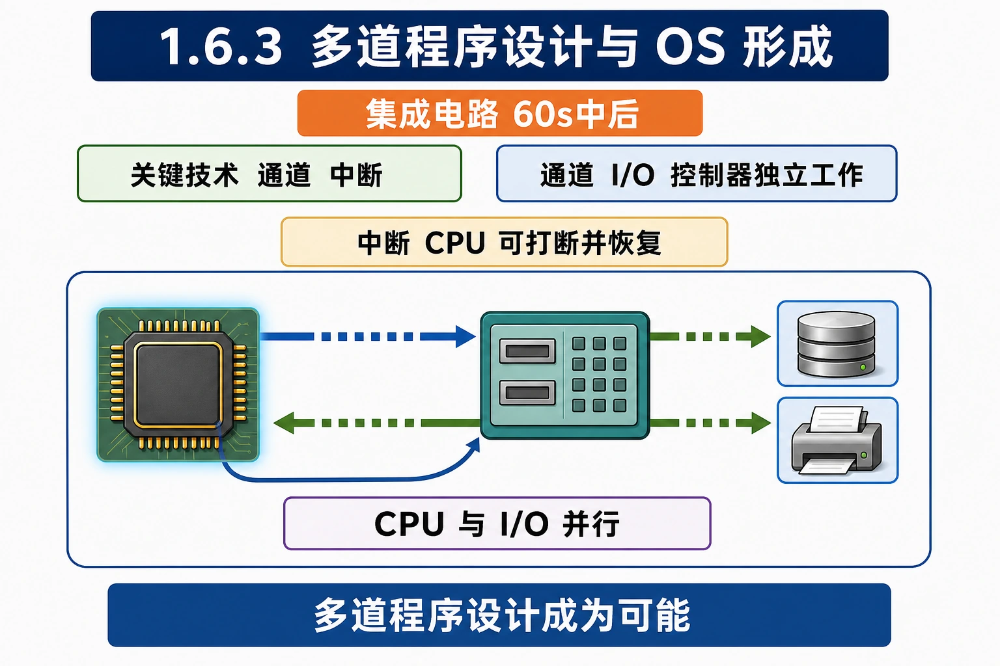
关键技术：通道 + 中断
- 通道：独立于 CPU 的 I/O 控制器，启动后能自己干活，实现 CPU 与 I/O 并行
- 中断：CPU 处理完外部事件后，能自动回到原位继续——让 CPU 能被随时”打断切换”
有了这两件神器，多道程序设计才成为可能（这是后续所有 OS 概念的源头）。
多道程序设计（核心概念，考点中的考点）
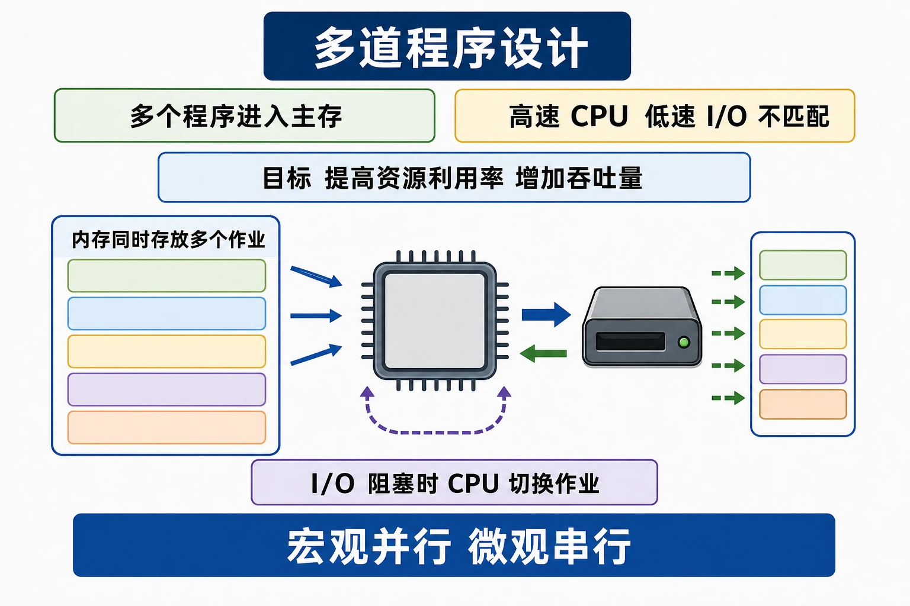
定义：允许多个程序同时进入主存并启动计算的方法。
起因：高速 CPU 与低速 I/O 设备不匹配——单道时 CPU 大量等 I/O，浪费严重。
根本目的： - 提高 CPU 利用率 - 提高内存利用率 - 提高 I/O 利用率 - 增加系统吞吐量
多道运行特征（背诵）： - 多道：内存中同时存放几个作业 - 宏观上并行：都处于运行状态，都没运行完 - 微观上串行：单 CPU 上各作业交替使用 CPU
单道 vs 多道 对比（考点必出）
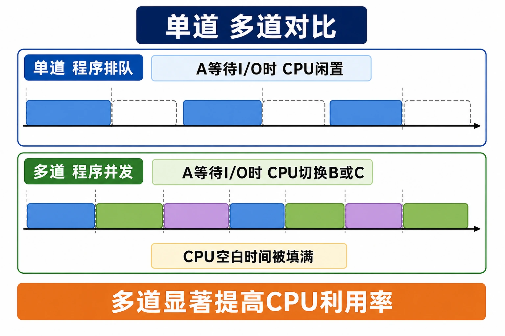
把时间轴画出来一目了然（fallback slide-113 描述）：
单道批处理（程序排队）：
时间轴 →
A: [CPU][I/O][CPU][I/O][CPU]
B: [CPU][I/O][CPU]
C: [CPU][I/O]
↑ 大量空白时间
A 等 I/O 时整机闲置，B、C 在排队。
多道批处理（程序并发）：
时间轴 →
A: [CPU][I/O ][CPU][I/O ][CPU]
B: [CPU][I/O ][CPU][I/O ]
C: [CPU][I/O ][CPU][I/O ]
CPU 几乎被填满
A 等 I/O 时 CPU 切去跑 B，B 等 I/O 时切去跑 C——CPU 永不闲置。
| 对比维度 | 单道批处理 | 多道批处理 |
|---|---|---|
| 主要解决 | CPU/内存/I/O 利用率不足 | I/O 时 CPU 闲置 |
| 内存中作业数 | 1 | 多 |
| CPU 利用率 | 低 | 高 |
记忆点：单道是”程序排队”；多道是”程序并发”。多道引入的关键就是”当一个程序阻塞在 I/O 时，CPU 切到另一个就绪程序”——这就是后续”进程”“调度”概念的源头。
CPU 利用率公式（必背）
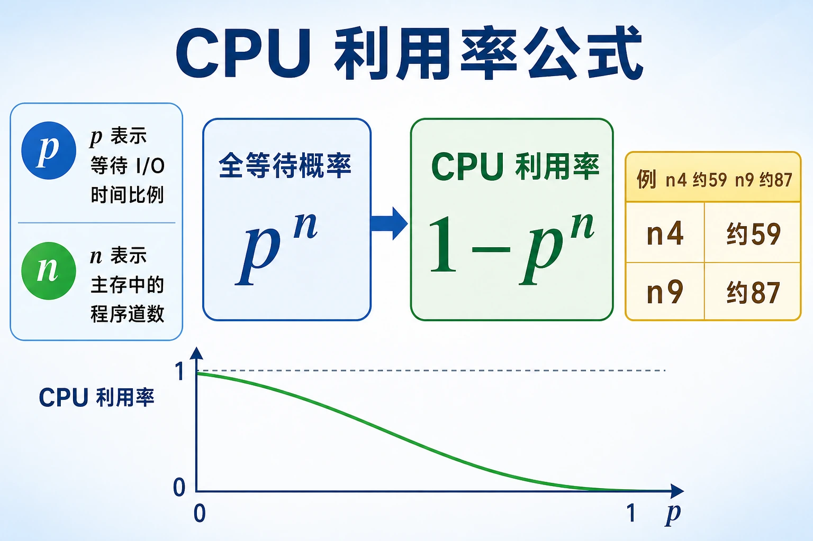
设单个程序等待 I/O 的时间占运行时间比例为 p，主存中有 n 道程序时：
所有程序都在等 I/O 的概率 = p^n
CPU 利用率 = 1 − p^n
典型例题（幻灯片 125）： - 计算机 1MB 主存，OS 占 200KB，剩余空间允许 4 道程序共享 - 若 80% 时间用于 I/O 等待 (p=0.8) - CPU 利用率 = 1 − 0.8⁴ = 59% - 加 1MB 内存后能跑 9 道：CPU 利用率 = 1 − 0.8⁹ = 87% - 第二个 1MB 提升 47% 的 CPU 利用率——多道+扩内存性价比极高
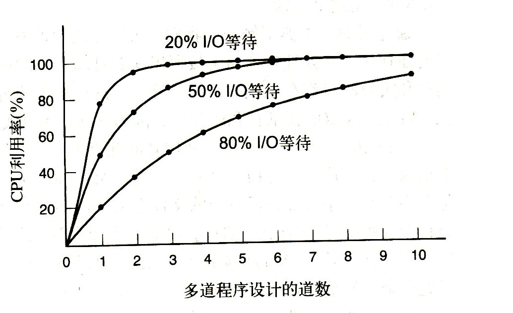
幻灯片 123 这张图是 CPU 利用率随道数变化的曲线： - 横轴：多道程序道数（1~10） - 纵轴：CPU 利用率（%） - 三条曲线分别是 20%、50%、80% I/O 等待——I/O 等待越多，越需要更多道才能拉满 CPU
读图要点： - p=20%（I/O 等待少）：n=2 已经接近饱和 - p=50%：n=4~5 才能拉满 - p=80%：n=10 都没拉满（曲线还在涨）
多道程序设计的代价
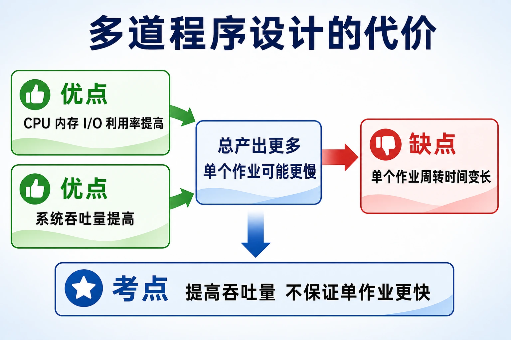
优点：提高 CPU/内存/I/O 利用率，提高吞吐量。 缺点：单个作业的周转时间变长。
类比：一个人专心做一件事 30 分钟搞定；同时做三件事可能每件 1 小时——总产出多了，但每件慢了。
多道程序 vs 多重处理
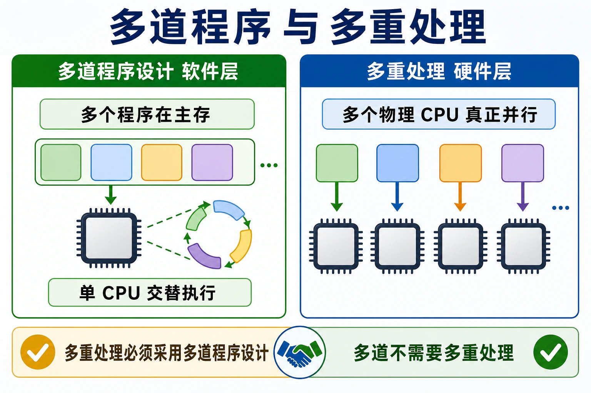
- 多道程序设计 = 软件层面的”同时多个程序在主存”，单 CPU 也能做
- 多重处理 (multi-processor) = 硬件层面有多个物理 CPU，能真正并行
关系：多重处理系统必须采用多道程序设计才能发挥威力；但多道不需要多重处理。
实现多道要解决的 3 个问题
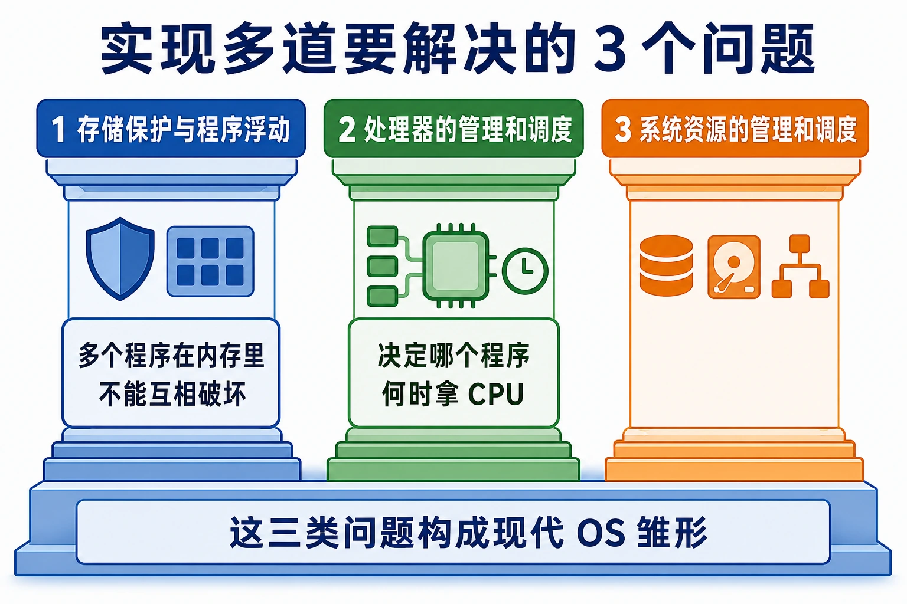
- 存储保护与程序浮动（多个程序在内存里不能互相破坏）
- 处理器的管理和调度（怎么决定哪个程序何时拿 CPU）
- 系统资源的管理和调度
——这三个问题的解决方案就构成了现代 OS 的雏形。
1.6.4 分时系统（70s）
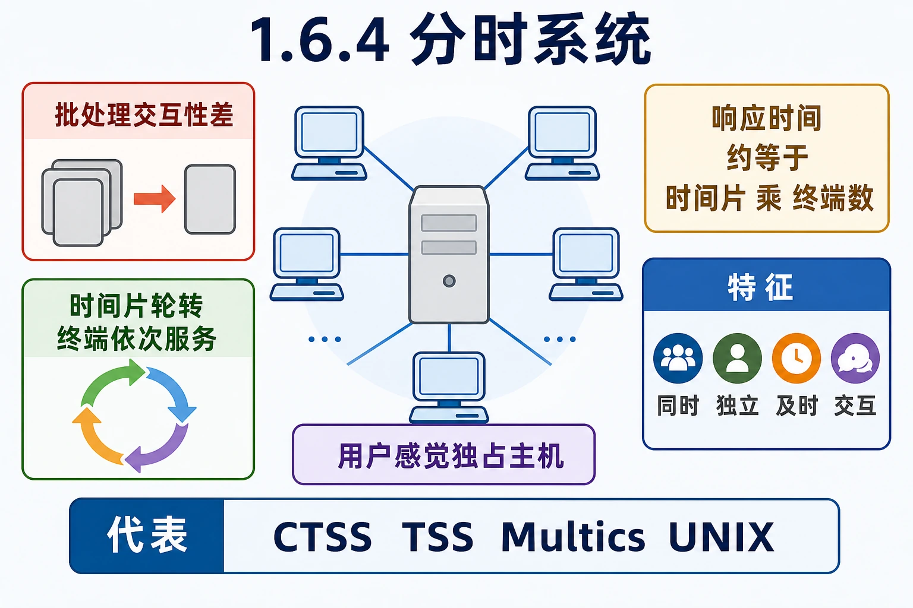
为什么需要分时？ 批处理两大痛点： - 用户交互性差（要等整个作业跑完才能调试） - 短作业周转慢（要排队等长作业跑完）
分时操作系统 (Time-Sharing OS)：用分时技术实现多道程序设计。一台主机连多个终端，每个用户感觉自己独占主机。
核心机制（fallback slide-134 描述的架构图）：
flowchart LR
Host[主机
CPU + 内存]
T1[终端 1]
T2[终端 2]
T3[终端 3]
Tn[终端 n]
Host --- T1
Host --- T2
Host --- T3
Host --- Tn
CPU 时间片按 1 → 2 → 3 → ... → n → 1 轮转分给各终端，响应时间 ≈ 时间片 × 终端数。
CPU 时间被切成时间片，按轮转方式分配给各终端。如果终端数不太多、时间片够小，每个用户都感觉独占——这就是”分时”的来历。
记忆公式：响应时间 ≈ 时间片 × 终端数
分时四大特征（考点必背）： - 同时性 — 多用户同时使用 - 独立性 — 每个用户感觉独占 - 及时性 — 响应迅速（秒级以内） - 交互性 — 用户能边算边看边改
代表系统：CTSS、TSS、Multics、UNIX。
分时 vs 批处理（考点对比）
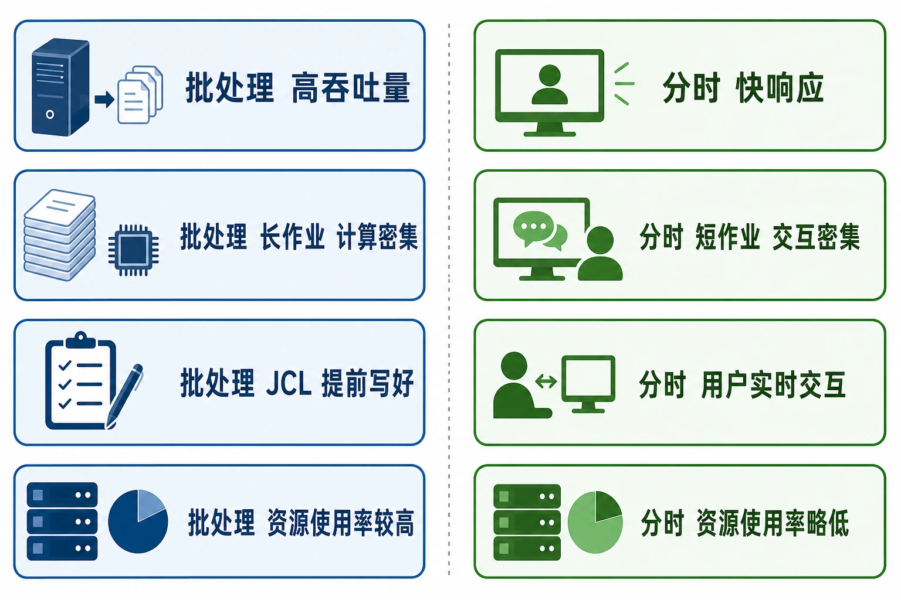
| 维度 | 批处理 | 分时 |
|---|---|---|
| 目标 | 高吞吐量 | 快响应 |
| 作业性质 | 长作业、计算密集 | 短作业、交互密集 |
| 资源使用率 | 高 | 略低 |
| 作业控制方式 | JCL 提前写好 | 用户实时交互 |
1.6.5 实时系统
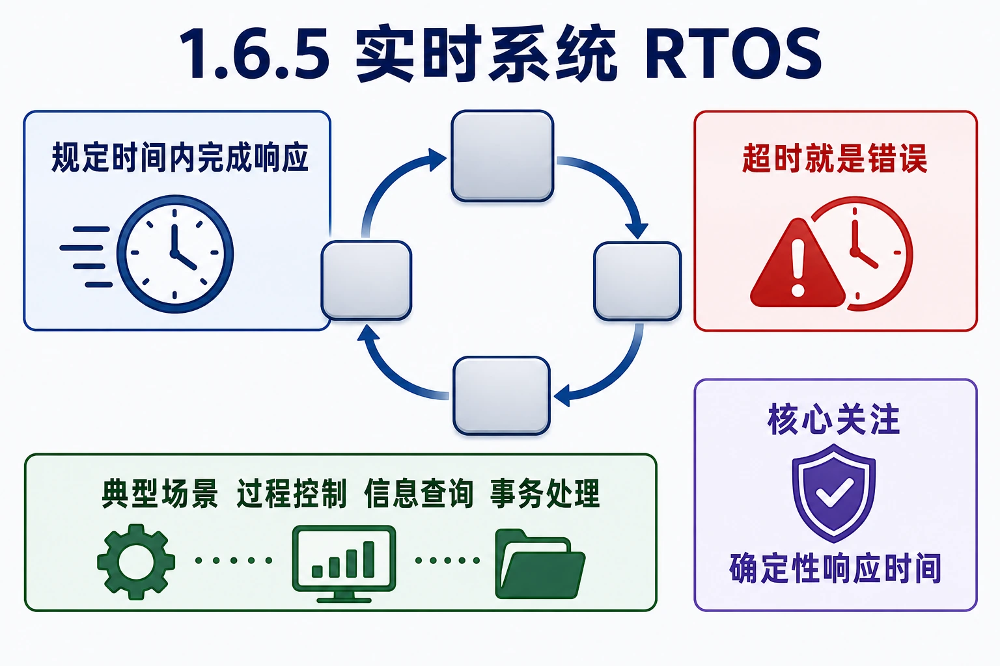
实时操作系统 (RTOS)：对外部事件在规定时间内完成响应。
类比：分时系统像饭馆——慢点没关系；实时系统像 ICU 监护仪——超时一秒可能出人命。
三种典型 RTOS： - 过程控制系统（生产线、自动驾驶） - 信息查询系统（情报检索） - 事务处理系统（银行业务）
处理流程：数据采集 → 加工处理 → 操作控制 → 反馈处理。
1.6.6 进一步发展：网络/分布式/并行/嵌入式/云
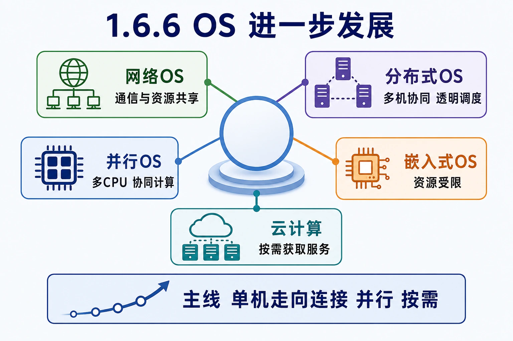
网络操作系统：在 OS 基础上加网络通信和服务功能（数据传输、资源管理、文件共享、网络管理、互操作）。
并行操作系统 (multi-processor)：1975 前后出现。配多个 CPU，分两类： - SMP（对称多处理） — 每个 CPU 跑相同 OS，地位平等。现代多核 CPU 都是 SMP - AMP（非对称多处理） — 主从架构，主 CPU 调度从 CPU
幻灯片 145 的图：3 个 CPU 各自带 registers + cache，共享同一块 memory——这就是 SMP 的标准结构。
flowchart TB
subgraph CPU0
R0[registers]
C0[cache]
R0 --- C0
end
subgraph CPU1
R1[registers]
C1[cache]
R1 --- C1
end
subgraph CPU2
R2[registers]
C2[cache]
R2 --- C2
end
MEM[(共享 memory)]
C0 --- MEM
C1 --- MEM
C2 --- MEM
分布式操作系统：松散耦合系统。每台机器有自己的本地存储，通过网络通信。
分布式 OS vs 网络 OS（考点对比）：
| 维度 | 分布式 OS | 网络 OS |
|---|---|---|
| 耦合程度 | 紧耦合，OS 同质 | 松耦合，可异构（协议同质） |
| 并行性 | 进程可在各机间迁移 | 各机进程独立 |
| 透明性 | 资源调度对用户透明 | 要明确指定资源在哪台机 |
| 健壮性 | 要求强容错（运行时重构） | 较弱 |
嵌入式操作系统：运行在嵌入式设备上，受大小、内存、能源严格限制。代表：TinyOS（伯克利智能传感器）、智能卡 OS、各种 IoT OS。
普适计算：M. Weiser 提出，让计算融入生活空间，由数字化设备 + 传感器 + I/O + 无线网络组成的 Smart Space。
云计算 (Cloud Computing)：Google 提出，是并行计算+分布式计算+网格计算的商业实现。 - 狭义：IT 基础设施按需获取 - 广义：服务按需获取 - 核心：把处理能力集中到”云”，终端简化为输入输出设备
框计算 (Box Computing)：李彦宏 2009 年提出，强调前端用户需求；与云计算的”后台资源整合”是两端的设计哲学。
1.7 常见 OS 类型一览
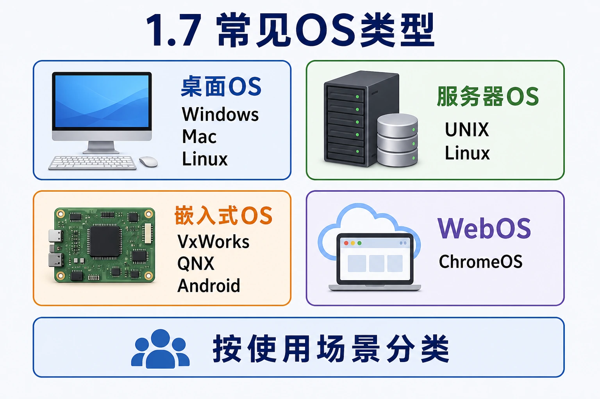
| 类型 | 代表 |
|---|---|
| 桌面 OS | MS-DOS, Windows 3.x/95/XP/Vista/7/8/10/11, Mac OS, Linux |
| 服务器 OS | Windows NT/200X/Server, UNIX, Novell Netware, OS/2, Linux |
| 嵌入式 OS | Windows CE/Mobile, PalmOS, uCLinux, uC/OS-II, VxWorks, pSOS, QNX, Symbian, Android |
| WebOS | Google Chrome OS（基于 Linux 内核） |
1.8 章末考试要点速查
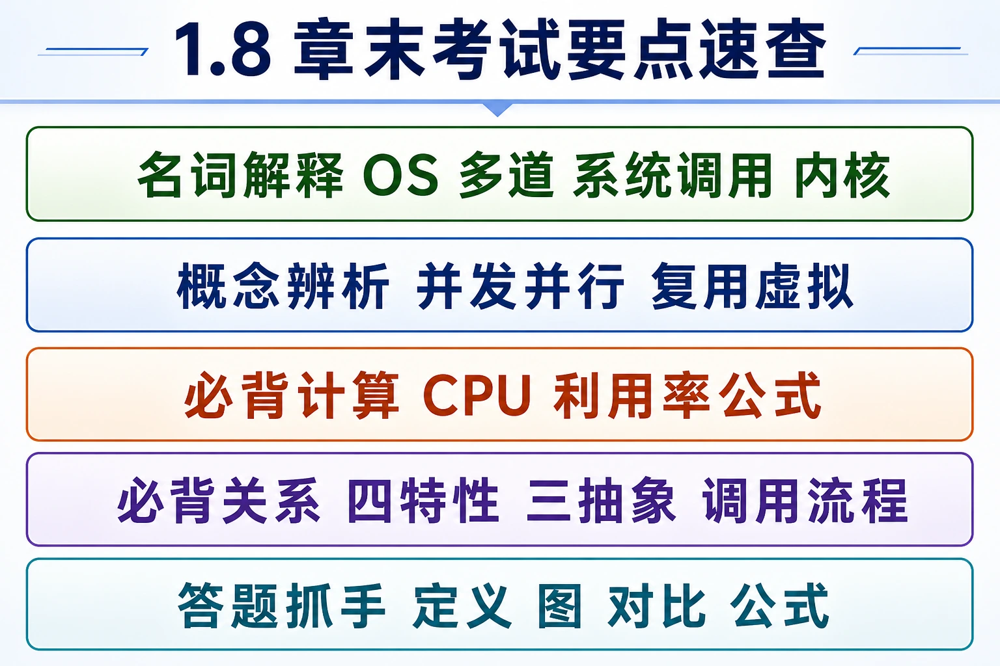
必背名词解释
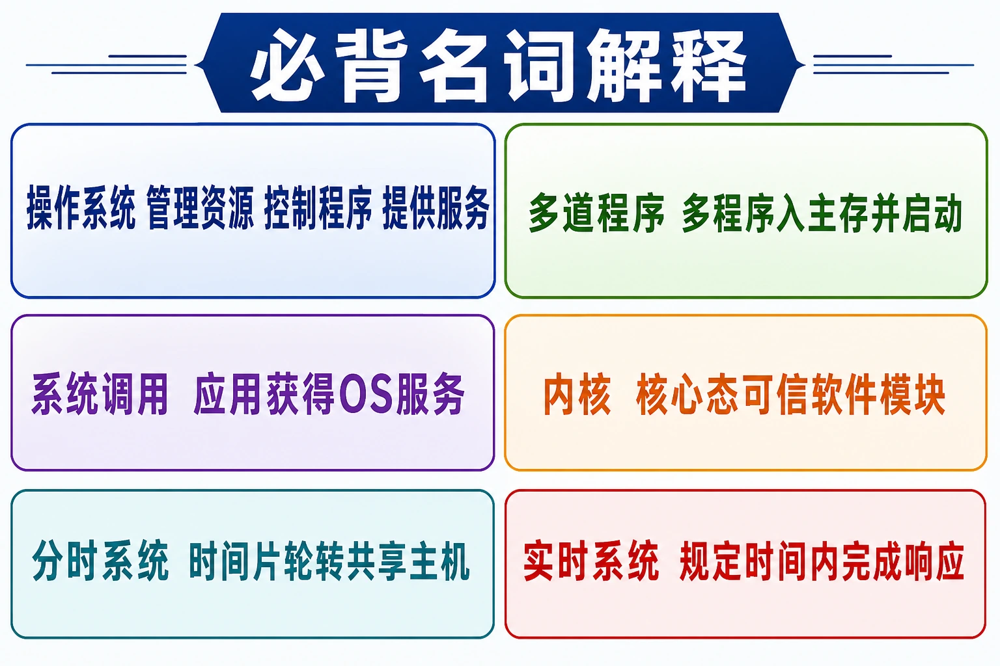
- 操作系统：管理资源、控制程序、改善人机界面、提供服务的系统软件
- 多道程序设计：允许多个程序同时进入主存并启动计算的方法
- 并发 vs 并行：同时间间隔 vs 同时刻；并行是并发的特例
- 系统调用：应用程序获得 OS 服务的唯一途径，用户态陷入核心态的接口
- 内核：运行于核心态、能执行特权指令的可信软件模块
- 单内核 vs 微内核：所有服务在内核 vs 仅基本服务在内核+其余在用户态
- 分时系统：通过时间片轮转让多用户共享主机的 OS
- 实时系统：在规定时间内完成响应的 OS
- OS 虚拟机：裸机 + OS，对应用呈现的”放大版”机器
必背概念辨析
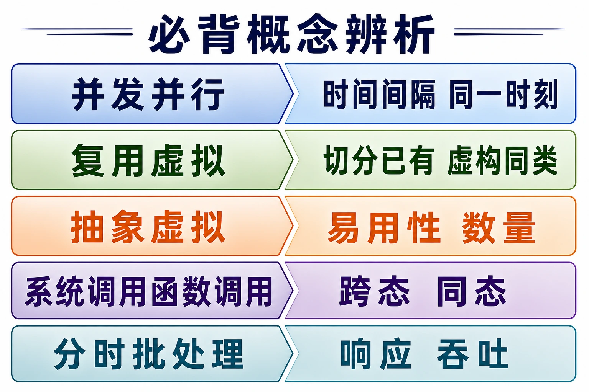
| 易混对 | 区分要点 |
|---|---|
| 并发 vs 并行 | 时间间隔 vs 时刻 |
| 复用 vs 虚拟 | 切分已有 vs 虚构同类 |
| 抽象 vs 虚拟 | 解决易用性 vs 解决数量 |
| 系统调用 vs 函数调用 | 跨态切换 vs 同态调用；功能号 vs 直接地址 |
| 单内核 vs 微内核 | 单地址空间 vs 多服务进程 + IPC |
| 多道程序 vs 多重处理 | 软件层多程序 vs 硬件层多 CPU |
| 分时 vs 批处理 | 响应快 vs 吞吐高 |
| 分布式 OS vs 网络 OS | 紧耦合同质 vs 松耦合异构 |
必背计算
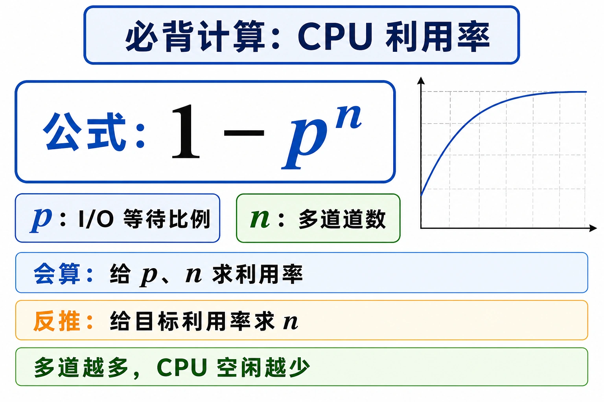
CPU 利用率公式：1 − pⁿ（p=I/O 等待比例，n=多道道数）
会算：给 p、n 求利用率；给目标利用率求 n。
必背关系图
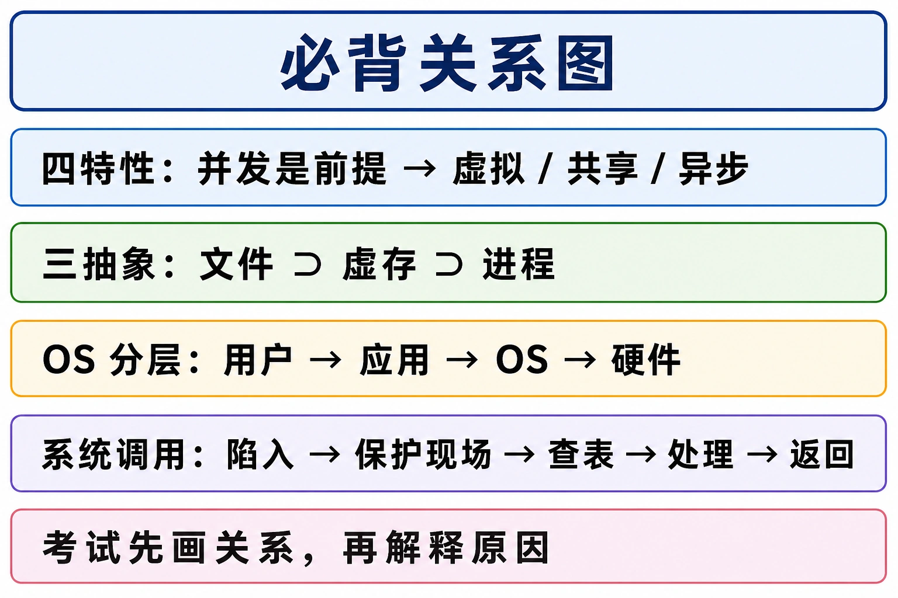
- 四特性关系：并发是前提，派生虚拟、共享、异步
- 三抽象包含关系：文件 ⊃ 虚存 ⊃ 进程
- OS 分层位置：用户 → 应用 → OS → 硬件
- 系统调用流程：陷入指令 → 保护现场 → 查表 → 处理 → 恢复现场 → 返回
高频简答题套路
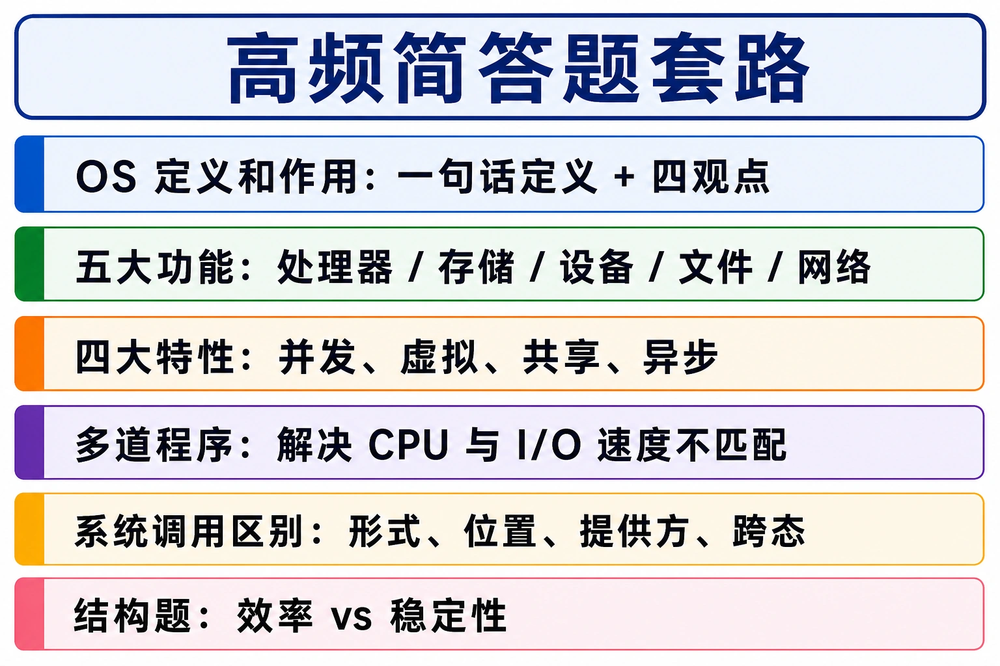
- “OS 的定义和作用？” → 一句话定义 + 四观点（服务用户/进程交互/系统实现/资源管理）
- “OS 五大功能？” → 处理器/存储/设备/文件/网络
- “OS 四大特性？” → 并发（前提）、虚拟、共享、异步
- “为什么需要多道程序设计？” → CPU/I/O 速度不匹配 → 提高利用率
- “单道 vs 多道？” → 排队 vs 并发；解决利用率不足 vs CPU 闲置
- “系统调用与函数调用区别？” → 三点（形式/位置/提供方）+ 跨态
- “单内核与微内核的优缺点？” → 效率 vs 稳定性
- “分时与批处理区别？” → 4 维度（目标/作业性质/利用率/控制方式）
- “分布式 OS vs 网络 OS？” → 4 维度（耦合/并行/透明/健壮）
附录：对应原始幻灯片范围映射表
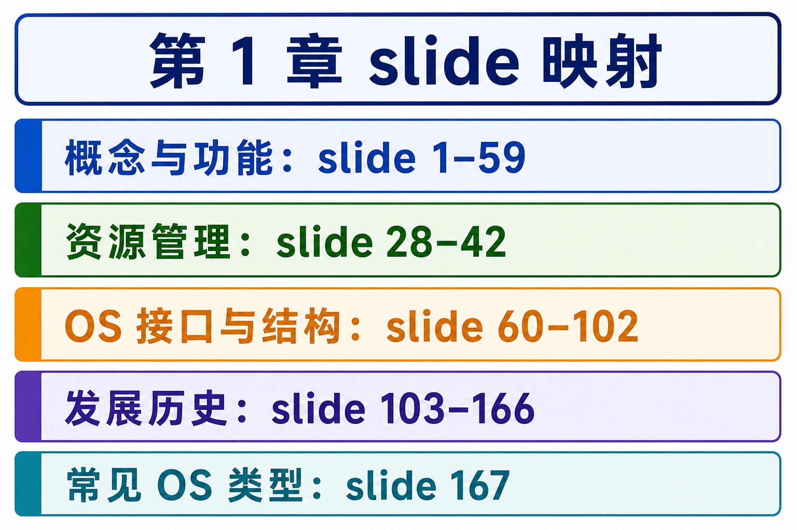
| 本笔记小节 | 原始幻灯片范围 | 配图处理 |
|---|---|---|
| 1.1 什么是 OS | slide 1~27 | OS 分层位置已 ASCII 化 |
| 1.2 功能与特性 | slide 43~59 | 四特性关系 → mermaid（在 1.2 节） |
| 1.3 三大资源管理技术 | slide 28~42 | — |
| 1.4 OS 接口 | slide 60~81 | — |
| 1.5 OS 结构 | slide 82~102 | 微内核分层 → mermaid（在 1.5.4 节） |
| 1.6 OS 发展历史 | slide 103~166 | CPU 利用率曲线保留（slide-123 jpg）；分时主机-终端、SMP 三 CPU 共享内存 → mermaid |
| 1.7 常见 OS 类型 | slide 167 | — |
| 1.8 考试要点速查 | （提炼自全章） | — |
图片清理说明（5/15）：原 53 张内嵌图 + 5 张 fallback 中，删除 57 张装饰漫画/低密度图（slide-114 卡片处理 23 张子图全是 < 500B 占位符；slide-107 人工操作卡通；slide-141 网络装饰；slide-151~166 普适计算/云计算装饰图集；fallback slide-012/017/113/134/141 已主线 ASCII 化或 mermaid 化）；保留 1 张（slide-123 CPU 利用率曲线，数值密集难 mermaid 化）；4 张关键结构图转 mermaid（slide-051 四特性关系、slide-088 微内核分层、slide-145 SMP、fallback slide-134 分时主机-终端）。目录体积 6.1M → 180K。
写作中遗留的疑问点
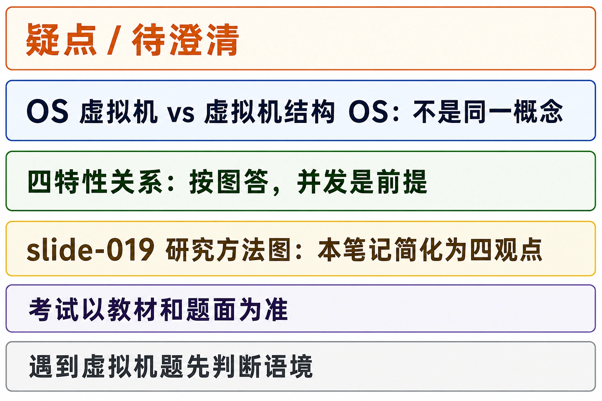
- OS 虚拟机 vs 虚拟机结构 OS —— 这是两个不同概念，但教材都用”虚拟机”一词，初学时易混。本笔记在 1.3 末尾做了提示，但课程后续是否会更明确区分需要留意。
- 图 slide-051（四特性关系图）我读出来是”并发→虚拟/共享/异步”的”前提”关系；但教材文字（幻灯片 50）只是平铺四特性。这种因果归纳是图作者的整理，考试若问”四特性的关系”建议按图回答，以”并发是前提”破题。
- slide-019 的复杂研究方法图（系统/用户角度 + 静态/动态观察方法 + 4 观点）信息密度高，本笔记简化为”四观点”。如果考试出”如何研究 OS”这类宏观题，再回查原图。
1.9 对话补充：考前秒答技巧
OS 干啥 vs 应用干啥（识别题套路）
考场常见识别题：”下面哪些是 OS 在做的事？”
判断口诀：
凡是涉及”分配/协调/管理硬件资源”的，都是 OS；凡是”业务逻辑”的，都是应用自己。
| 是 OS 干的（资源管理） | 是应用干的（业务逻辑） |
|---|---|
| 决定谁先用 CPU、用多久 | 微信编码消息发给服务器 |
| 把 I/O 请求排队等磁盘空闲 | Chrome 渲染 HTML/CSS |
| 给新进程分配内存段 | 视频应用解码 H.264 帧 |
| 用 SPOOLing 把打印任务排队 | Word 计算文档分页 |
CPU 利用率公式秒算
考场没计算器，记几个常用值：
0.8² = 0.64 0.8³ = 0.512 0.8⁴ ≈ 0.41 0.8⁵ ≈ 0.328
0.5² = 0.25 0.5³ = 0.125 0.5⁴ = 0.0625
0.7² = 0.49 0.7³ = 0.343
反推题套路（”利用率不低于 80% 至少需要几道？”）：
1 − 0.8ⁿ ≥ 0.8 → 0.8ⁿ ≤ 0.2
试值：0.8⁵ ≈ 0.328 > 0.2，不够
0.8⁶ ≈ 0.262 > 0.2，不够
0.8⁸ ≈ 0.168 < 0.2，足够 → n ≥ 8
简答题三段式模板（CPU 利用率类）
问：为什么多道程序设计能提高 CPU 利用率？
满分版三段式：
段 1（说单道问题）：单道程序运行时，CPU 在程序等待 I/O 期间只能空闲等待，利用率低。 段 2（说多道机制）：多道程序设计在内存中同时保存多个程序，当一个程序因 I/O 阻塞时，OS 立即调度另一个就绪程序占用 CPU，把原本浪费的 I/O 等待时间转换成 CPU 有效工作时间。 段 3（用数据佐证）：例如 p=0.75 时，1 道利用率 25%，4 道升至 68.4%。
金句：“用 I/O 等待时间换 CPU 工作时间”——8 字概括本质。
易错点 Top 5
- “并发 = 并行” ❌ — 并发是同时间段，并行是同时刻
- “系统调用比函数调用快” ❌ — 反了，系统调用要切态、切栈、保护更多现场
- printf 是系统调用 ❌ — printf 是 C 标准库函数，内部最终调用 write 系统调用
- “分时系统追求吞吐量” ❌ — 分时追求响应时间，批处理才追求吞吐量
- “硬件中断 vs 软件中断 = 内中断 vs 外中断” ❌ — 划分依据是信号源在 CPU 内 vs 外，不是硬件软件